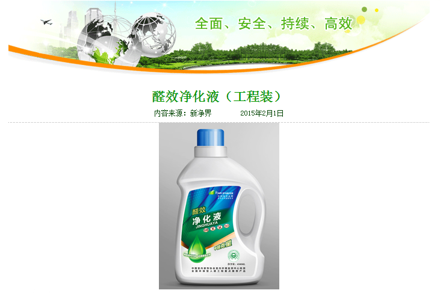
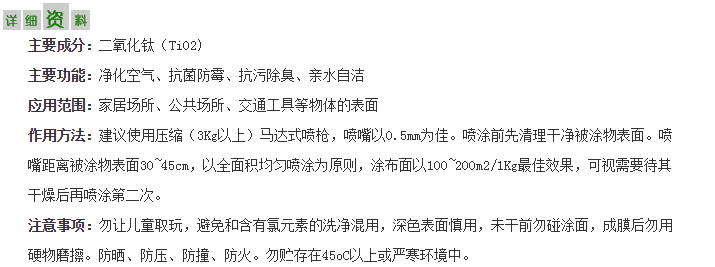

新装修问题
家住朝阳区小关北里14号楼的刘女士15年初新装置了房子，装修后房子一直闲置至今已有大半年，据刘女士说房子自从装修后开窗比较少，偶尔会过来开下窗，有时候因天气不好把窗户关好后就过段时间过来发现屋里味道刺鼻后再开几天，这样反复至今。直到要入住了发现室内甲醛超标严重才想起来联系境享环境进行专业室内空气治理，我们的技术人员到现场时刘女士家的窗子已经又连续关了1个多星期了。
联系我们 CONTACT US
 